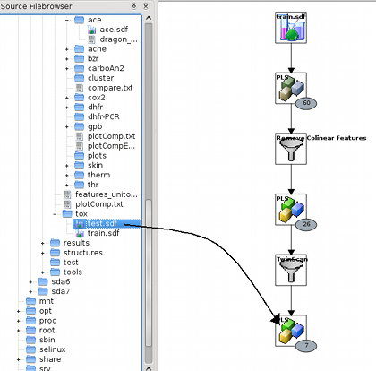

Index
Index

Predictions
|  | In order to predict the response variables of new data, i.e. data that has not been used for training the model, just drag a data-file from the sourcefile-browser onto the model. After the pipeline has been executed (see here), the prediction that has been done for this test data set can be analyzed as shown here. |